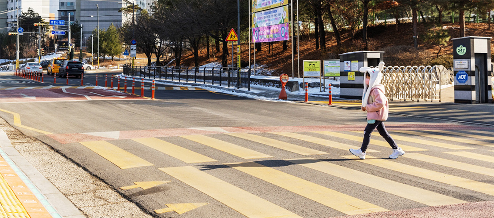
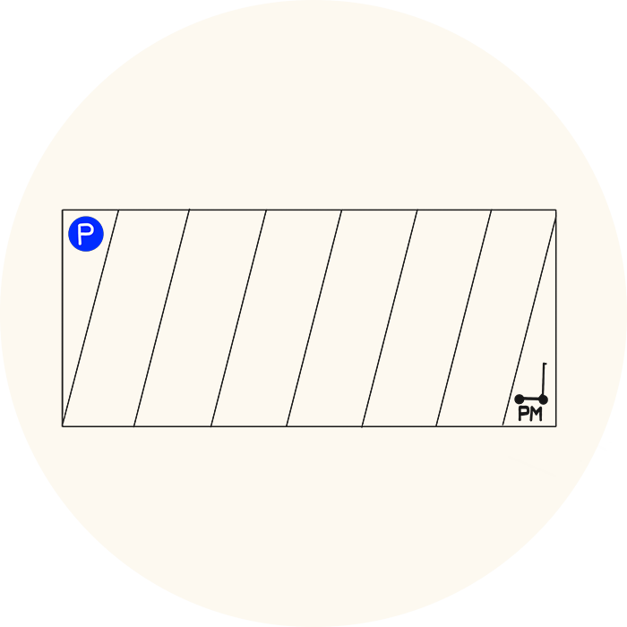
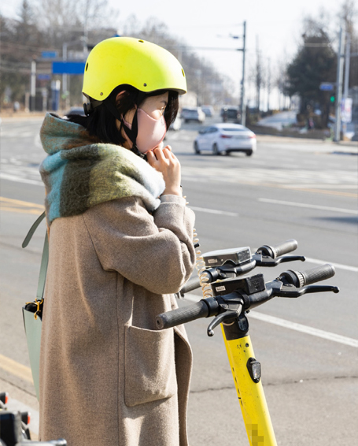
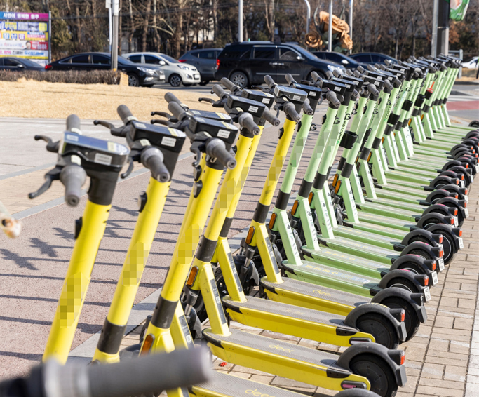
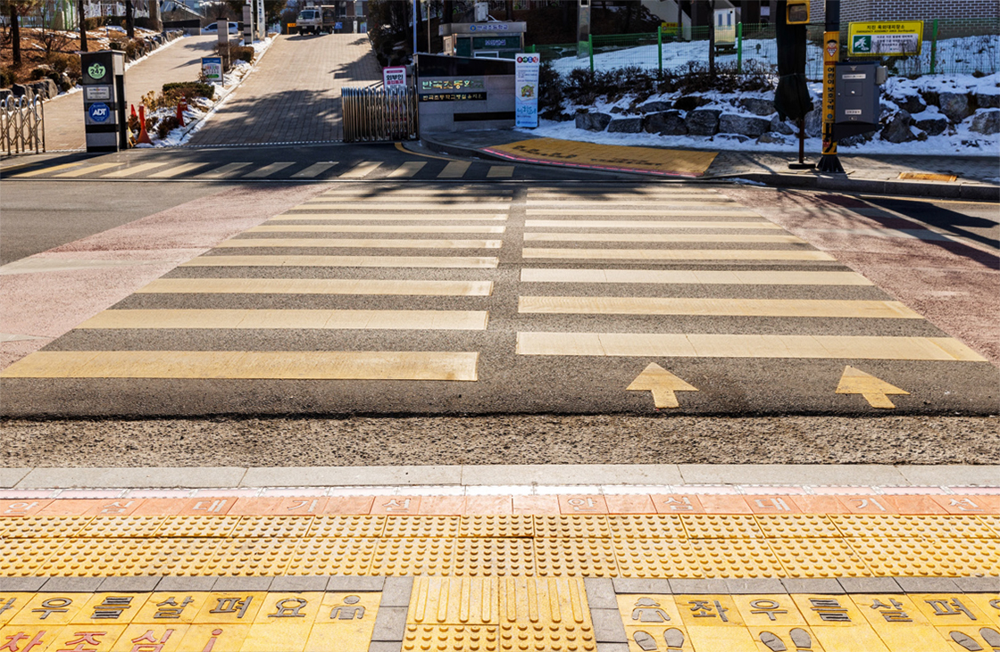
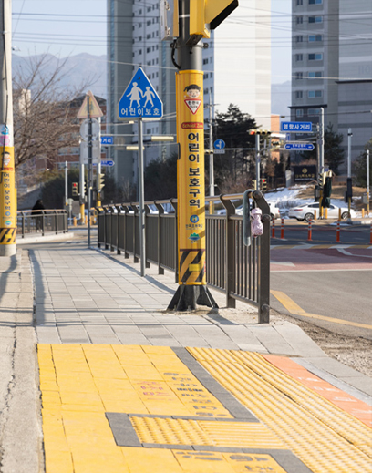

교통안전의 도시 원주
노란색 횡단보도와 PM 주차구역 설치
도로와 철도 등의 교통인프라가 구축되어 있는 교통의 도시다.
최근 원주시는 어린이보호구역에 노란색 횡단보도를 설치하고,
개인형이동장치 주차구역을 대거 신설하는 등 교통안전을 위한 새로운 역사를 써내려가는 중이다.
지난 1월, 원주시 반곡초등학교 앞. 아직 방학이 한창인 시기지만 초등학교 앞은 간간히 지나다니는 학생들이 포착된다. 방학 기간동안 진행되는 특별수업에 참여하는 학생들이다. 인근 아파트 단지에 거주하는 학생들도 많아 초등학교 앞을 지나는 아이들도 적지 않다. 학교 정문에서 바로 연결된 노란색 횡단보도는 아이들이 가장 많이 다니는 길. 특이하게도 이 곳의 횡단보도는 흰색이 아닌 노란색이다.
멀리서도 눈에 띄는 노란색 횡단보도와 노란 전신주, 옐로카펫 등이 한눈에 이곳이 어린이보호구역이라는 것을 알려준다. 그 덕분일까. 학교 앞을 지나는 자동차들은 신호와 관계없이 서행하며 더욱 주의를 기울이는 모습이다.
원주시에 이런 노란색 횡단보도는 반곡초등학교와 서원주초등학교, 총 2곳에 설치돼 있다. 지난해 9월 경찰서와 원주시가 협력해 노란색 횡단보도를 시범운영하기 시작했기 때문. 기존의 흰색 횡단보도 색상을 노란색으로 바꿔 운전자는 물론 보행자 모두가 횡단보도 위치를 쉽게 인지할 수 있도록 한 것이다.
지역 주민 이현주(가명) 씨는 “노란색 횡단보도가 생긴 이후 멀리서도 횡단보도 위치를 알 수 있어 더욱 조심하게 됐어요. 아이들도 횡단보도를 건널 때 횡단보도가 없는 쪽으로 건너는 일이 줄어든 것 같더라고요.”라고 전한다.
횡단보도의 시인성을 높여 초등학생의 안전한 등하굣길을 위해 조성된 노란색 횡단보도. 시범운영이 시작된 지 아직 4개월이지만 노란색상이 주는 강렬한 메시지는 충분히 전달되고 있는 것으로 보인다.
한편, 노란색 횡단보도는 미국(캘리포니아), 홍콩, 스위스 등 국가에서도 적용하고 있는 것으로 알려졌다. 강원도를 비롯한 대구, 인천 등 7개 시도경찰청과 지자체가 협조해 시범운영 중인 노란색 횡단보도는 경찰청에서 도입 전후 효과를 분석해 이후 도로교통법 개정을 진행할 예정이다. 경찰청은 “특히 어린이 교통사고는 사회적 파장이 크고 그 사안이 중대한 만큼 보호구역에서는 항상 안전운전할 것을 당부드린다.”라고 전했다.

전국적으로 개인형이동장치(PM) 이용자가 증가하면서 주차문제도 불거지고 있다. 여기저기 방치된 개인형이동장치로 인해 눈살을 찌푸리게 되는 일도 적지 않다. 특히 많은 이들이 이용하는 이동수단은 전동킥보드. 이에 따라 원주시는 지난해 전동킥보드 전용 주차구역을 450여 면으로 대폭 확대했다.
실제로 원주시내 주요 교차로 및 젊은층이 많은 지역을 중심으로 전동킥보드 전용 주차구역을 설치했다. 유동인구가 가장 많은 지역 중 하나인 단계동 원주시외버스터미널에도 전동킥보드 주차구역이 마련돼 이용자들의 편의를 도모했다.
주차구역에는 이미 다수의 전동킥보드가 주차돼 있었다. 노면에 주차선이 그려져 누구라도 주차공간인 것을 알아챌 수 있도록 했으며 전동킥보드 대여 업체 어플에도 주차구역임을 표시했다. 무엇보다 버스 정류장 등 대중교통과의 연계가 편리한 곳에 설치돼 이용자들의 불편 또한 최소화했다. 전동킥보드를 대여하거나 반납할 때 전용 주차구역을 이용하면 언제든 쉽게 위치를 찾을 수 있고, 관리 또한 용이해 더욱 합리적이다.

원주시가 이처럼 전동킥보드 전용 주차구역을 설치하기 시작한 것은 2021년부터다. 지난해부터는 전동킥보드 이용자가 급증하면서 기존 330면이던 전동킥보드 전용 주차구역을 더욱 확대하기에 이르렀다. 이 뿐만 아니다. 주차위반 자동차 견인 조례에 전동킥보드를 포함하고 시민들이 직접 불법 주·정차된 전동킥보드를 신고할 수 있는 ‘민원신고시스템’을 도내 최초로 도입했다. 원주시의 이러한 노력이 도내 교통안전에 얼마나 큰 효과를 가져다 줄지 귀추가 주목된다.




원주시가 교통안전의 메카로 거듭나고 있는 가운데, 원주혁신도시를 보금자리로 하고 있는 도로교통공단은 지역과 함께하는 교통안전 문화 형성에 힘을 쏟는 중이다.
지난해 어린이보호구역 내 노란색 신호등 설치에 앞서, 도로교통공단은 2021년 초록우산어린이재단이 주관하는 그린로드 대장정에도 함께하며 안전한 통학로 조성에 뜻을 함께한 바 있다. 그린로드 대장정은 전국적으로 시행된 교통안전 사업의 일종으로 초등학교 주변 전신주에 노란색 반사필름을 시공해 어린이와 운전자에게 어린이보호구역임을 알리기 위해 기획됐다.
도로교통공단은 반곡초등학교와 북원초등학교 인근 어린이보호구역에 노란 전신주를 설치하고, 원주시 어린이보호구역 보행환경 실태조사 후 개선안을 마련했다. 또한 임직원이 모은 ‘코로드 기금’으로 노란전신주 설치비용을 지원하며 공공기관으로서 사회적 가치 실현을 위해 적극적으로 동참하는 모습을 보였다.
또한 도로교통공단은 개인형이동장치 등 새로운 교통수단 이용법 안내 및 교통안전 캠페인 전개 등을 활발히 진행하고 있다.